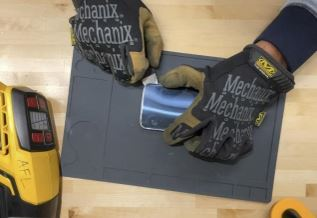
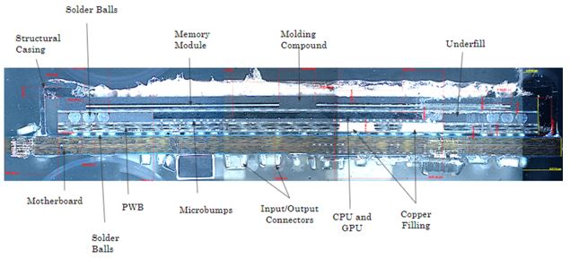
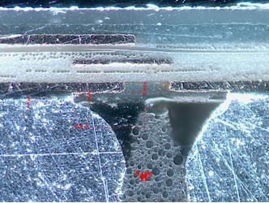
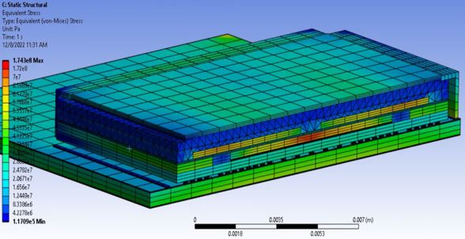
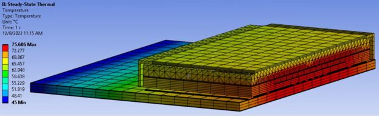
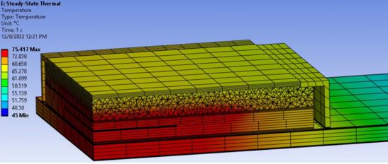

A project I was assigned in Mechanical Design of Electronic Systems course, the objective was to deconstruct an electronic system to expose its chipset for design review and product testing or simulations. My team, consists of Alberto Muinelo, Kevin Medina, Mital Patel, Gillian Shilling, and Jeffin Xavier was given a task to provide design feedback alongside further improvements.
The device we are using is a Samsung Galaxy S6 Edge phone with Exynos 7420 chipset. We performed a Thermo-Mechanical analysis of the CPU including model geometry, material properties and boundary conditions. We then simulated stress and thermal analysis under maximum operating loads and temperatures.

Removing the glass backplate was a bit tricky since we had to melt the waterproof rubber seal with heatgun whiile simultaneously prying the rubber from the edges. However, it was easier to disassemble all sub components such as the Litihium Ion Battery, wireless charging pad, motherboard, fingerprint scanner, speaker, microphone, rear and front camera, alongside SUB board.
The motherboard contains a significant number of components and is the mounting system for the brains of the device, including the IC chips associated with the CPU, GPU, RAM and other controllers.

The Exynos 7420 is a system on chip (SOC) that utilizes 14 mm FinFET and CMOS technology. It is a fairly complex component, housing 2.5 or 3D packaging techniques where the chips are mounted vertically or horizontally on top of each other to maintain a smaller packaging size yet increased processing capability. The CPU also has 8 cores with a base clock speed of 2.1Ghz and an official thermal design power of 7 watts.

The images above demonstrates a challenge with implementing underfill. Near the top of the solder balls, underfill does not make contact with the solder or the board. Capillary action was not completely effective in filling this space with underfill.

The maximum stress within the model is shown at the corner of the motherboard, however it is believed this is due to the applied clamped condition, and would not be the case should a more detailed model of the larger system be developed.
herefore this is considered a non-physical result and is disregarded in the further discussions. There are additional stress concentrations located at the center of the die, and at the edges of the outermost solder balls. The observed stresses in each of the solder balls decreases as their location approaches the center of the chip.

hThe image shows that the heat generated at the center of the device conducts outward in all directions, and fully dissipates sometime before reaching the edge of the simulated motherboard. It is also interesting to note that the heat is dissipated significantly by the outer cover, but conducts easily through the PWB layers.
This is likely due to the high The considerable change in temperature between the center and outer edges further confirms that the stresses shown on the solder balls are real concentrations that could lead to fatigue damage and reliability issues.

When underfill is added to the model for all BGAs, the stresses are significantly reduceed. The area where underfill is specifically added lowered the maximum stress by around 60%. Based on these results, it can be surmised that adding underfill has structural benefits. although it does not enhance the heat dissipation properties of the component, it also does not have a negative impact, therefore, it is recommended that underfill be included wherever BGAs are used within the Exynos 7420 to increase the fatigue life of the component, and consequently the whole Galaxy S6 device.